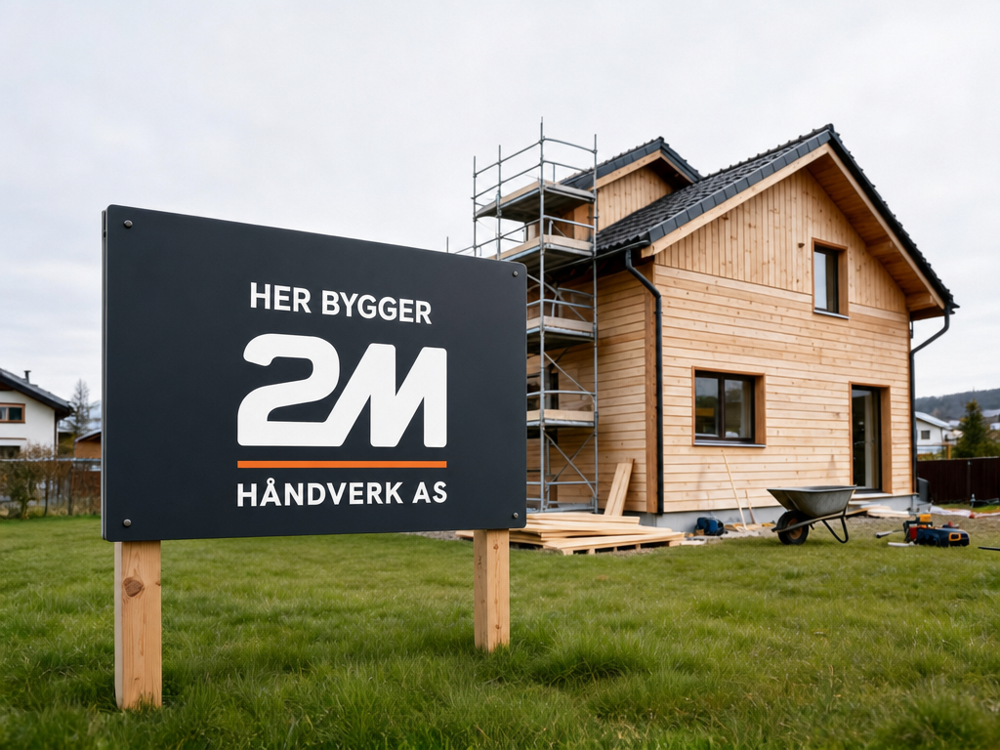
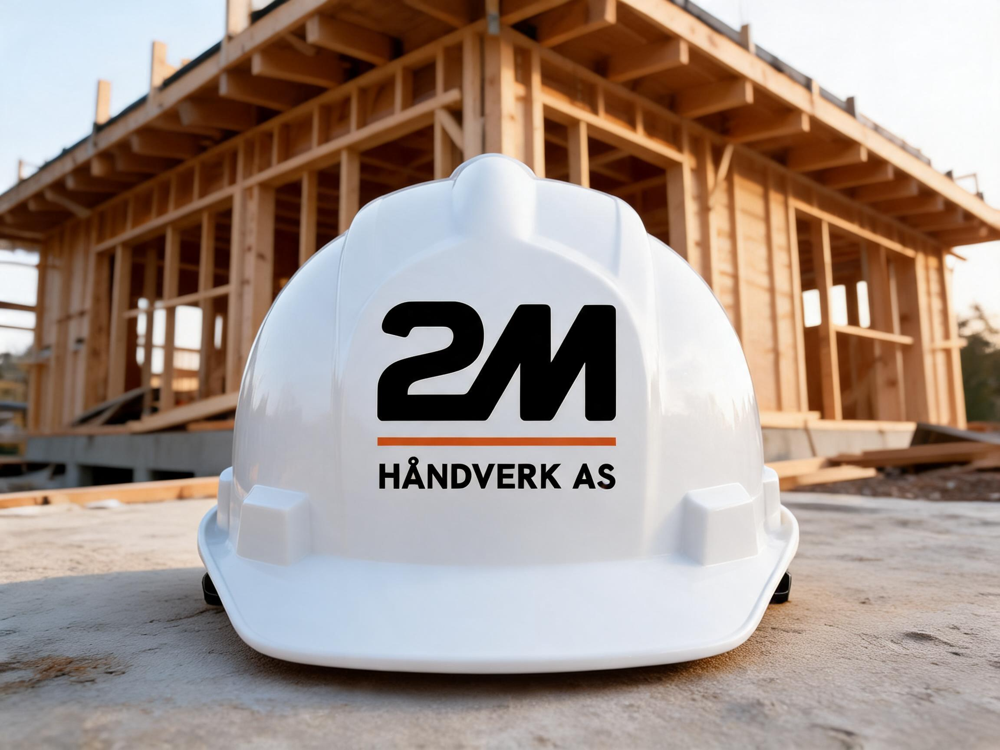
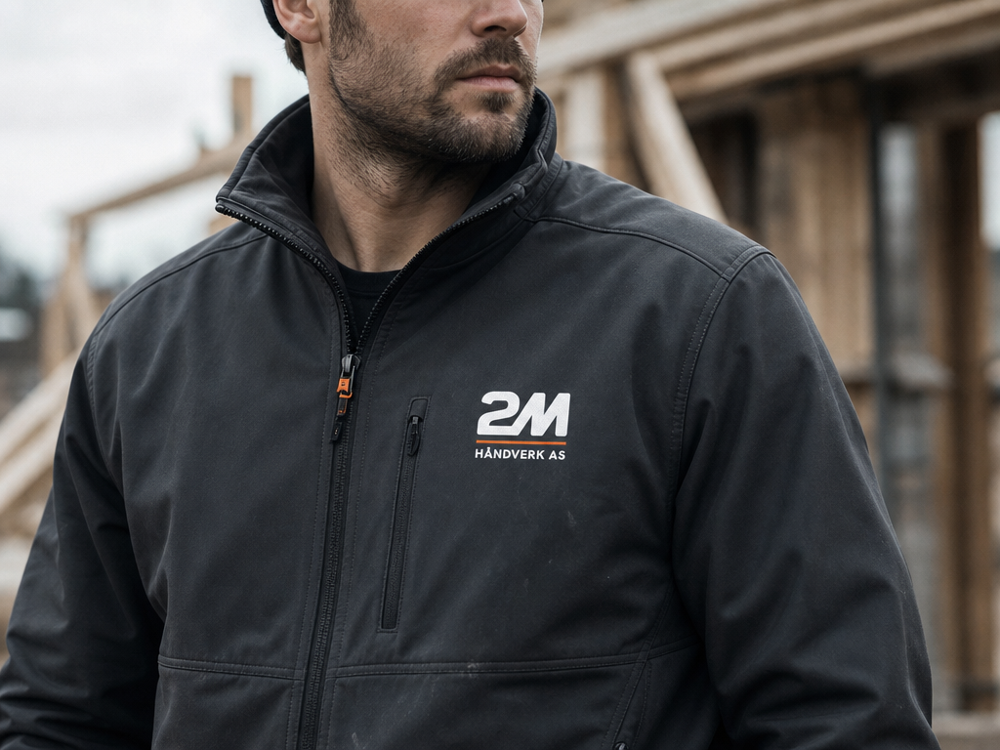

2M Håndverk AS
Identyfikacja wizualna · v01 · 2026
Hele jobben,
ett firma.
Remonty · Ciesielstwo · Dekarstwo · Blacharstwo
Bærum · Asker · Oslo
01 ZnakSygnet
Geometryczny monogram „2M" - dwójka i M zlewają się w jeden znak. Grube, mocne
formy z miękkimi, zaokrąglonymi narożnikami dają znak jednocześnie nowoczesny i solidny. Skośna
przekątna M nadaje dynamikę i ruch - firma, która prowadzi robotę do przodu. Cały znak zbudowany
jest na stałej siatce (patrz 02).
02 KonstrukcjaGeometria i siatka
x = jednostka bazowa siatki
Szerokość: 72x
Wysokość: 38x
Kąty: 12° / 60° / 72°
Promienie oparte na okręgach z siatki
Znaku nigdy nie odrysowujemy ręcznie. Zawsze używaj dostarczonych plików. Proporcje,
kąty i promienie są zablokowane na siatce, aby znak był spójny w każdym rozmiarze.
03 LockupUkład
Podstawowy - pionowyWiększość zastosowań · pion i kwadrat
Pionowy to wariant podstawowy - używaj go wszędzie, gdzie się da.
Poziomy stosuj na szerokich, niskich formatach (nagłówek www, oklejenie auta, szyld).
Sygnet to ikona tam, gdzie nazwa jest już znana - zdjęcie profilowe, favicon, magnesy,
małe powierzchnie.
04 Pole ochronne i rozmiarStrefa ochronna
Zawsze zachowaj wolną strefę co najmniej „y" z każdej strony, jak pokazano.
Żaden tekst, obraz ani inny element nie może wejść w tę strefę.
Ta sama zasada dotyczy sygnetu. Więcej światła jest zawsze lepsze niż za mało.
Minimalny rozmiar
Poziomy · min 40 mm / 150 px
Pionowy · min 18 mm / 64 px
Sygnet · favicon 24 px
05 Warianty kolorystycznePozytyw / negatyw
PozytywNa jasnym tle (Wapno / Cement)
NegatywNa ciemnym tle (Węgiel / Kamień)
Sygnet na kolorze
Na pomarańczowym tle zawsze używaj białego sygnetu (bez belki) - wariant pełny
ma pomarańczową belkę, która znika na pomarańczowym tle.
06 Błędne użycieNigdy tak nie rób
✕
Nie rozciągaj ani nie zniekształcaj
✕
Nie umieszczaj na niespokojnym tle
✕
Nie dodawaj cienia / efektów
07 KoloryPaleta
Węgiel#1C1B19Tekst · logo
Kamień#3B3A37Ciemne tła
Beton#8A867ELinie · etykiety
Cement#E7E3DCSekcje
Wapno#FAF8F4Tło
Pomarańcz#E5621EAkcent · CTA
Zasada 90 / 10 - ok. 90 % neutralnych (węgiel / szarości / wapno), maks. 10 % pomarańczu jako akcent. Nigdy pomarańcz jako duża płaszczyzna.
08 TypografiaHanken Grotesk
Aa.
Regular - tekst podstawowy
Medium - etykiety
Bold - wyróżnienia
Black - nagłówki
H1 · 54Hele jobben,
ett firma.
H2 · 32Doświadczone ręce do całego zlecenia
Tekst · 17Doświadczeni fachowcy, którzy biorą cały zakres - od pierwszej rozmowy po ostatnią deskę. Zawsze stawiamy klienta na pierwszym miejscu i informujemy Cię na bieżąco.
Etykieta · 1201 - Usługi · Ciesielstwo · Dekarstwo · Blacharstwo
09 Lista plikówDostarczone pliki
2m-logo-horizontalPNG · pozytyw
2m-logo-horizontal-whitePNG · negatyw
2m-logo-verticalPNG · pozytyw
2m-logo-vertical-whitePNG · negatyw
2m-logo-markPNG · pozytyw
2m-logo-mark-whitePNG · negatyw
2m-logo-vertical-clearspacePNG · strefa ochronna
2m-logo-mark-clearspacePNG · strefa ochronna
2m-logo-…-mono-blackSVG · PNG · jeden kolor
2m-logo-…-mono-whiteSVG · PNG · jeden kolor
2m-logo-constructionPNG · konstrukcja
favicon.svg / .ico+ 16-512 px · apple-touch
Każdy wariant dostarczony jako PNG (ekran), JPG (biuro / dokumenty) i
SVG (wektor do web i dużych formatów). Dodatkowo zbiorczy wektorowy PDF ze wszystkimi
wariantami (2m-logo-alle.pdf, 8 stron).
Komplet. Wszystkie warianty w pozytywie, negatywie i mono (cały czarny / cały biały
z belką w tym samym kolorze) do druku jednokolorowego, grawerowania i folii - plus pełny pakiet
favicon (SVG, ICO, 16-512 px i apple-touch-icon).
10 ZastosowaniaMockupy

Oklejenie auta - Ford Transit Custom

Tablica budowy - „Her bygger"

Kask - przód

Kask - bok

Kurtka robocza